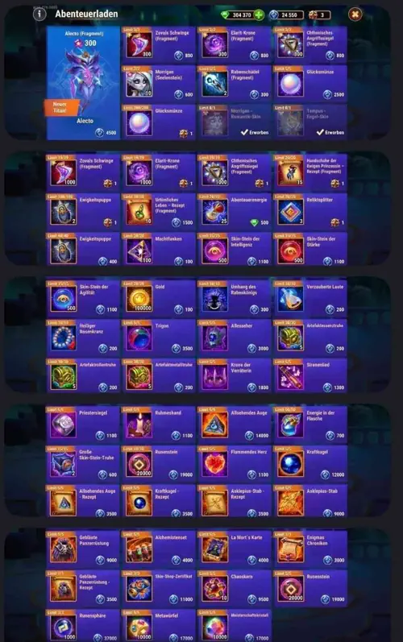

Who Is Alecto and Why Does This Event Matter?
Alecto is the first Elarite Titan in Hero Wars Alliance — a brand-new element introduced with her arrival. She belongs to the Fire element as well, which means she fits perfectly into the strongest Fire titan team in the game: Ignis, Asherona, Araji, Moloch, and Alecto. According to the data, a full maxed-out Fire team with Alecto defeats full Water, Earth, Darkness, and Light teams 10-0. That alone should tell you how significant she is.
Her role is Marksman (front line), and her ultimate skill Fate's Judgment dashes behind the enemy with the highest Attack, strikes them and nearby enemies 5 times, and makes her immune to debuffs while doing so. She's incredibly elusive and devastating.
Here's the part I really want you to understand: this event is your best opportunity to build Alecto properly. After the event ends, getting her Soul Stones and unique artifacts becomes much harder. You might wait months before another good chance shows up. Don't sleep on this window — your future self will thank you.
For the full breakdown of Alecto's skills, stats, glyphs, skins, and best team compositions, read my complete Alecto Titan Guide here.

Understanding the Two Event Currencies
Before we get into what to buy, you absolutely need to understand the two different currencies in this shop. They come from different sources and they're used for different things. Mixing them up will leave you confused, so let me be very clear about each one.
Valor Coins
How to earn them: You earn Valor Coins by defeating the final boss of the season event. The faster you reach the boss and the more times you beat it, the more Valor Coins you earn. This is a tough task — it demands planning, smart use of your resources, and sometimes spending extra Emeralds to push through. It's not something every player will max out, especially at first.
Adventure Coins
How to earn them: You earn Adventure Coins by completing the event's daily missions. These are the everyday tasks the season assigns you. Keep doing them consistently throughout the event and you'll accumulate a solid amount.
Now that you know where each currency comes from, let me break down every purchase priority for you.
Valor Coin Purchases — Priority Guide
Valor Coins are the hardest currency to earn in this event. They require you to defeat the final boss, which takes real effort and planning. Because they're scarce, every single one needs to count. Here is the exact order I recommend:
-
#1 — Alecto's Weapon Artifact: Zorval's Wing (Absolute Priority)
This is the single most important item you can buy with Valor Coins. Alecto's weapon artifact, Zorval's Wing, gives +120,000 Physical Attack at max level. But the real reason it's so powerful is its passive effect: when Alecto uses her Fate's Judgment skill in combat, it can trigger a buff that boosts your entire team's stats for 9 seconds. That's a team-wide boost firing off every time she uses her ultimate.
You need to reach at least 3 stars on this artifact for the activation chance to hit 100%. Below 3 stars, the effect won't always trigger — and that inconsistency in a competitive environment will cost you battles. Focus everything on reaching 3 stars minimum. Budget your Valor Coins accordingly before spending them anywhere else.
Not sure how artifacts work? Read the full explanation in my Alecto Titan Guide.
-
#2 — Alecto's Seal Artifact: Chthonic Attack Seal
Alecto's seal, the Chthonic Attack Seal, provides +107,400 Physical Attack and +3,450,000 Health at max level. The health bonus here is massive — it makes Alecto much more durable on the front line while she's dashing through enemies. After securing the weapon artifact to 3 stars, this is your next target.
-
#3 — Alecto's Crown Artifact: Elarite Crown
The Elarite Crown gives +213,000 extra damage to Light and Dark titans and +120,600 defense against Light and Dark titans. This is extremely useful in the meta where top-tier teams often feature Light and Dark titans in PvP. It's the third priority because the seal adds flat attack and survivability that matters more in most situations, but the crown catches up quickly in relevance as you face stronger opponents.
-
#4 — Eternal Princess Gloves (Morrigan's Red Equipment)
This is Morrigan's red-tier glove equipment. It grants +22,320 Health and +930 Toughness — solid stats for a hero who already performs well in PvP. Here's the honest take though: Morrigan works perfectly fine in PvP even without this item. She doesn't need it to be effective. If you haven't secured all three of Alecto's artifacts to good star levels, skip this item entirely and keep your Valor Coins focused on the artifacts. The Gloves are only worth considering once you've handled Alecto's artifacts first.
-
#5 — Universal Relic Shards
These shards can be used on any hero to level up their relics — they're not tied to Alecto. That makes them very flexible. However, I need to be upfront: this item got more expensive compared to the Miu season. In Miu's event you got 4 Universal Relic Shards per Valor Coin. In Alecto's event it dropped to 3 shards per Valor Coin. Less value. That said, if you've already secured Alecto's three artifacts and you have spare Valor Coins, this is a decent backup purchase. Just remember — Alecto's artifacts come first, always.

Avoid: Coin of Luck
I need to talk about this one specifically because it looks tempting. The Coin of Luck takes you to a fortune wheel called Hero's Fortune, where you can potentially win skins, talismans, and other items. Sounds exciting, right? Here's the problem: you can also win outdated titan artifacts, Soul Stones from older titans you could already get from Summoning Spheres, or other low-value items. You're trading a guaranteed good investment for a gamble.
My opinion: the most valuable prize on the wheel is talismans, but there are dedicated Talisman Fever Events where you can earn those far more reliably. Don't trade the certain value of Alecto's artifacts for a spin of luck. During the event you will naturally earn some Luck Coins for free — use those to spin the wheel and you'll understand exactly what I mean.
Adventure Coin Purchases — Priority Guide
Adventure Coins are earned from daily missions throughout the event. You get more of these than Valor Coins, but there are still limits on how many times you can buy each item — so you can't just buy everything. Here's what actually matters:
-
#1 — Alecto Soul Stones (Absolute Priority — Do Not Skip)
This is your number one goal regardless of where you are in the game. Soul Stones are what evolve Alecto to higher star levels, and higher stars directly unlock her potential in battle. You need a minimum of 4 stars to field Alecto effectively in combat. Reaching 6 stars is the long-term goal.
Here's the star evolution table so you know exactly what you're working toward:
Star Level Soul Stones Required Total Accumulated 1 Star 30 30 (initial summon) 2 Stars 50 80 3 Stars 150 230 4 Stars 500 730 5 Stars 900 1,630 6 Stars 1,500 3,130 That last stretch from 4 to 6 stars requires 2,400 more Soul Stones on top of the 730 you already spent. I know that sounds like a lot — and it is. That's exactly why this event is so critical. Once it ends, you might go months before another reliable source of Alecto Soul Stones becomes available. Don't hold back. Push as far as you can now.
You can also get more Alecto items through the Season Pass and through the Ancient Awakening Event shop — but the Adventure Coin shop here is your main supply of Soul Stones during this season.
-
#2 — Alecto's Artifacts (Also Available with Adventure Coins)
Alecto's weapon, seal, and crown artifacts can also be purchased with Adventure Coins. However, there is a lower purchase cap compared to Valor Coins — because Adventure Coins are easier to earn, each item has fewer available purchases. This means you can't rely solely on Adventure Coins to fully upgrade the artifacts, but every star you can add here helps.
The priority order is the same: Weapon Artifact first (minimum 3 stars for 100% activation), then Seal, then Crown. If your Valor Coins weren't enough to reach 3 stars on the weapon, keep pushing with Adventure Coins.
-
#3 — Primordial Life (Red Equipment — Low Priority)
This is a red-tier equipment piece used by multiple heroes. It's not exclusive to Titans at all. I'll be honest: I've farmed so much of this item through campaign energy that my inventory was overflowing of secondary items, and farming it wasn't even worth doing anymore. You'll collect it naturally over time.
Only consider buying Primordial Life at the very end of the event — and only if both of these are true: Alecto is already at 6 stars and you still have Adventure Coins left over. Otherwise, every coin goes to Soul Stones and artifacts.
-
#4 — Rune Spheres (Situational)
Rune Spheres become important once your glyphs hit level 40 — that's when you need them to keep upgrading. They can feel scarce at first, but you can farm them for free through Eternal Frontier. If you're struggling with glyph progression, this is a reasonable purchase. If your Eternal Frontier runs are consistent, skip it here.
-
#5 — Mastery Crystals (Situational)
Used to upgrade talismans. These are better farmed during the Talisman Fever Event, which gives you plenty without needing to spend Adventure Coins here. If that event is coming up, wait for it.
Items You Should Avoid Buying (Any Currency)
This section could save you from mistakes that will hurt your progression for weeks. These items look useful in the shop, but they are all poor investments compared to Alecto's exclusive items:
- Hero Equipment Pieces — You're much better off spending energy in regular campaign stages. Doing that completes Season Event missions and other active events simultaneously, while also earning you Gold, Experience, and the equipment itself for free.
- Metacubes — Available for free at the Port. No need to spend event currency on them.
- Skin Shop Certificates — Over time you'll accumulate plenty of these from Outland discount promotions, which are by far the best way to spend Emeralds. During those promotions you get skin stones, complete skins, and certificates all at once. As living proof: I currently have over 150 skin certificates sitting unused in my inventory. Golden rule: a fully leveled existing skin is worth far more than a brand-new empty skin.
- Spark of Power — In the endgame, Sparks of Power become worthless. You accumulate them automatically just by leveling up titans and advancing in the Dungeon. Don't buy what the game gives you for free.
- Mystery Doll — Might seem appealing for beginners, but if you're in Alecto's event, every coin should go toward building Alecto — not general items.
- Gold — In the endgame, Gold is essentially infinite. If you always feel broke on it right now, the real solution is optimizing your Dungeon strategy — not buying Gold with event coins. Check out my Dungeon Guide for Infinite Gold.
How to Maximize Your Adventure Coins and Event Energy
The more Adventure Coins you earn and the further you advance in the season map, the better your results. When you complete daily missions, you earn Adventure Coins and in some cases Adventure Energy. That energy is what lets you advance further on the map — and advancing further means getting closer to the final boss (more Valor Coins).
One of the best sources of Adventure Energy is the Tower chest-opening missions. Opening daily Tower chests counts as a mission that rewards Energy. I strongly recommend monitoring the Alexandre Games Event Calendar and focusing on events that bonus Tower chest openings — those windows give you way more Energy per Emerald spent.
If you want to buy Energy with Emeralds: the direct purchase is brutal — 10,000 Emeralds for 500 Energy, which lets you defeat the final boss roughly 5 times. Not great. Opening all Tower chests costs around 2,300 Emeralds and gives you equipment, Gold, Tower coins, and Adventure Energy all at once. That's a much smarter investment if you choose to spend.
Season Event Missions — Complete Summary
Here's the full breakdown of how many rewards you can expect from each mission category during the season:
| Mission / Category | Type | Total Reward | Currency |
|---|---|---|---|
| Daily Login | Event (1x per day) | 235 | Adventure Energy |
| The Journey - Expeditions | Event (accumulated) | 230 | Adventure Energy |
| Path Above - Tower Chests | Daily (repeatable) | 45 | Adventure Energy |
| Arena Lord | Daily (repeatable) | 1,100 | Adventure Coins |
| Secrets of the Frontier | Daily (repeatable) | 11,800 | Adventure Coins |
| Spend Energy | Daily (repeatable) | 4,600 | Adventure Coins |
| Spend Emeralds | Event (accumulated) | 84,850 | Adventure Coins |
| Generous Soul - VIP | Daily (repeatable) | 20,750 | Adventure Coins |
| TOTAL - Adventure Energy | 510 | Adventure Energy | |
| TOTAL - Adventure Coins | 123,100 | Adventure Coins |
The Spend Emeralds mission rewards the most Adventure Coins overall (84,850), but it requires progressive Emerald spending. The repeatable daily missions together add up to over 38,000 Adventure Coins per day if you complete them all. Consistency is everything — log in every day and don't miss a single mission.
Use the Code: ALEXANDREGAMES
The best place to buy emeralds and equipment is the official Hero Wars Hub store. Not only do they have the best offers, but you also earn extra rewards for you and your guild — the more your guildmates purchase, the more everyone benefits!
If you plan to take advantage of the event through the official Hero Wars Hub store, remember to use the code ALEXANDREGAMES.
This does not cost you anything extra and helps me keep bringing the blog content and detailed event guides like this one. Thank you!
Quick Shopping Cheat Sheet
| Currency | Item | Priority | Notes |
|---|---|---|---|
| Valor Coin | Weapon Artifact (Zorval's Wing) | BUY FIRST | Min. 3 stars for 100% activation |
| Valor Coin | Seal Artifact (Chthonic Attack Seal) | High | Great attack + health bonus |
| Valor Coin | Crown Artifact (Elarite Crown) | High | Damage & defense vs Light/Dark |
| Valor Coin | Eternal Princess Gloves (Morrigan) | Optional | Only after Alecto's artifacts are done |
| Valor Coin | Universal Relic Shards | Situational | 3 shards per coin — only with leftovers |
| Valor Coin | Coin of Luck | AVOID | Random wheel — unpredictable value |
| Adventure Coin | Alecto Soul Stones | BUY FIRST | Push for 4 stars minimum, 6 stars ideal |
| Adventure Coin | Alecto Artifacts | High | Same priority order as Valor Coins |
| Adventure Coin | Primordial Life | Low | Only if Alecto is 6 stars and coins left over |
| Adventure Coin | Rune Spheres | Situational | Farmable free in Eternal Frontier |
| Adventure Coin | Mastery Crystals | Situational | Wait for Talisman Fever Event |
| Any | Equipment / Metacubes / Sparks / Gold / Mystery Doll | AVOID | Free from regular gameplay |
Final Thoughts
Alecto is a game-changer for the Fire titan team, and this Season Adventure Shop is your best window to build her properly. The focus is crystal clear: Soul Stones first, Weapon Artifact to 3 stars minimum, then Seal and Crown. Everything else is secondary.
One last tip: if you're going to spend Emeralds on Energy to push harder in the event, do it intelligently — open Tower chests for combined rewards rather than just buying raw Energy. And if you find yourself with leftover coins at the very end? Only then look at secondary items like Primordial Life or Rune Spheres.
I hope this guide takes the guesswork completely out of Alecto's shop. If it helped you, share it with your guildmates — the more everyone knows, the stronger your whole team becomes!
For the complete Alecto stat breakdown, skill descriptions, glyph priorities, and best titan team formations, don't forget to visit my complete Alecto Titan Guide.
See you in the next guide! — Alexandre